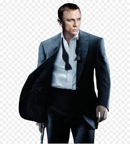
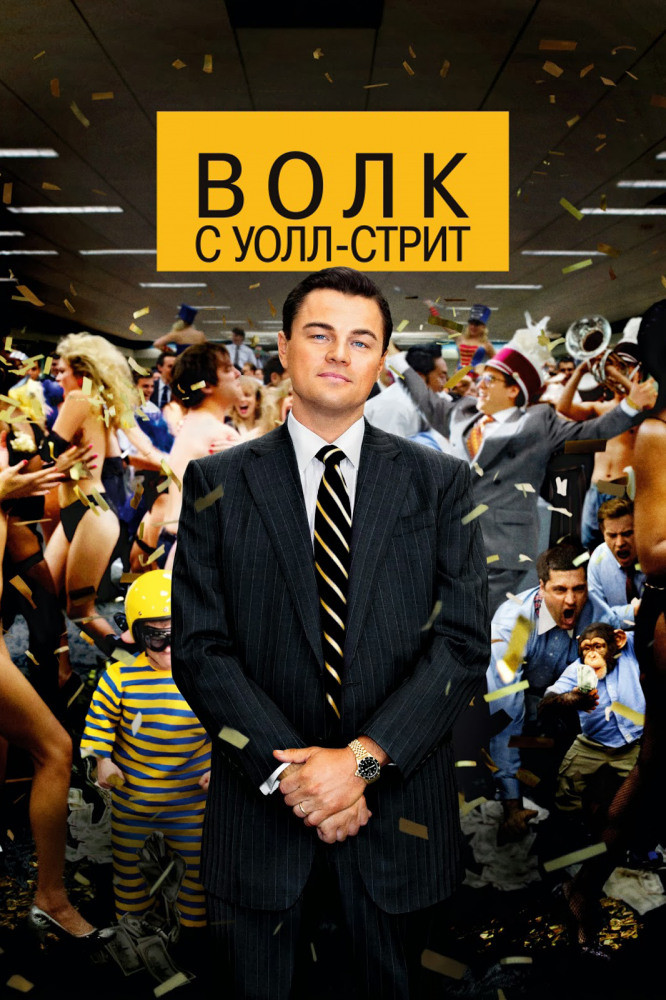

«Казино „Рояль“»
«Казино „Рояль“» (англ. Casino Royale) — двадцать первый фильм из серии фильмов про вымышленного агента 007 британской разведки Джеймса Бонда, основанный на самом первом романе Яна Флеминга «Казино „Рояль“». Фильм является дебютом в роли супер-агента британского актёра Дэниела Крэйга и рассказывает о начальном этапе работы Бонда на службе английской разведки. Режиссёром фильма выступает Мартин Кэмпбелл, ранее уже участвовавший в серии, как режиссёр фильма «Золотой глаз». Сценарий к фильму написан лауреатом премии «Оскар» Полом Хаггисом. Фильм также является новым перезапуском франшиз о герое предыдущих фильмов.
Советник
.jpg)
«Советник» (англ. The Counselor) — криминальный триллер сопродюсера и режиссёра Ридли Скотта по сценарию Кормака Маккарти. Премьера в США состоялась 25 октября 2013 года, в России — 31 октября 2013 года. Фильм посвящается памяти брата режиссёра, Тони Скотта.
Фокус
«Фокус» (англ. Focus) — криминальная трагикомедия режиссёров и сценаристов Гленна Фикарры и Джона Рекуа. В главных ролях — Уилл Смит, Марго Робби и Родриго Санторо. Премьера в США состоялась 27 февраля 2015 года, в России — 26 февраля.
Волк с Уолл-стрит
«Волк с Уолл-стрит» (англ. The Wolf of Wall Street) — американская чёрная кинокомедия режиссёра Мартина Скорсезе, вышедшая в мировой прокат 25 декабря 2013 года. Главную роль в картине исполнил Леонардо Ди Каприо, это его пятый совместный проект со Скорсезе[2]. Фильм получил пять номинаций на премию «Оскар», в том числе за «Лучший фильм».